Depuis dix ans, Marceau voyage. Il invite François, son ami d'université devenu réalisateur, à le rejoindre dans l'Himalaya indien pour la dernière étape de sa route : l'ascension d'Umling-La, le plus haut col routier du monde, à 5 870 mètres.
Pendant sept semaines, les deux amis traversent le Ladakh à vélo. Le film est le récit de deux ascensions : celle d'une montagne, et celle, plus lente, de la connaissance de soi.
En chemin, des rencontres déplacent le vrai sujet du film — le col compte moins que ce que la route enseigne : accepter l'incertitude, apprendre à écouter, ralentir. Lire la suite ↓
« Le récit de deux ascensions : celle d'une montagne, et celle, plus lente, de la connaissance de soi. »
Umling-La · SynopsisDe Manali à Leh, puis de Leh à Umling-La : sept semaines de route à travers le Ladakh, ponctuées d'autres cols franchis avant le dernier — Rohtang Pass (3 890 m), Baralacha-La (4 890 m), Lachulung-La (5 079 m) et Taglang-La (5 328 m) — chacun une marche de plus vers l'altitude, avant les 5 870 mètres d'Umling-La.

Voir Umling-La sur Google Maps ↗Umling-La n'est pas un film d'exploit. Depuis dix ans, Marceau explore ce que le corps et l'attention apprennent quand on leur laisse le temps ; François filme la fin de ce voyage avec une conviction simple, portée par les rencontres du chemin : c'est d'abord en prenant soin de sa propre paix intérieure que l'on contribue, modestement, à celle du monde.
Sur la route se dessine une discipline plus discrète que le kilométrage : regarder ce qui traverse l'esprit — la peur, l'ennui, la joie — sans chercher à le corriger, juste en le laissant être vu. Ne rien fuir dans le mouvement, ne rien fuir dans l'immobilité. Ce n'est pas un chemin de privation : c'est une attention entière portée à ce qui est là, maintenant, avec la légèreté de ceux qui ont cessé de se juger.
Le vrai sommet ne se trouve pas à l'arrivée.
Umling-La · Note d'intentionCroisé un matin sur la route, devenu un ami. Sa vie tient en une phrase : servir un idéal, tout en acceptant de ne jamais devenir cet idéal.
Une halte, un monastère, une conversation qui déplace le regard sur ce que veut dire chercher.
Un détour loin du col, et une autre idée du temps — celui du travail de la terre, à l'écart de la route des cyclistes.

Après La Belle Ville, son premier film documentaire, François part filmer Umling-La aux côtés de Marceau, son ami depuis leurs années d'études à Toulouse. Devant et derrière la caméra, en totale autonomie sur les 700 km jusqu'au col.

Depuis dix ans sur les routes, ces dernières années presque exclusivement à vélo, en quête de sens et de nouvelles expériences. C'est son invitation qui est à l'origine du voyage jusqu'à Umling-La.
Dossier de presse complet, affiche, kit de communication et photographies de tournage en haute définition — tout est regroupé sur l'espace presse.